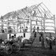

Recent News
-
April 5, 2016

Ph.D. student Timothy Goodrich has been awarded a 2016 National Defense Science & Engineering Graduate (NDSEG) Fellowship!
-
March 30, 2015
We're delighted to announce that Kyle Kloster from Purdue University will be joining Theory In Practice as a postdoc in June 2016.
-
March 14, 2016

New preprint with Ph.D. student A. van der Poel posted to ArXiv: A Fast Parameterized Algorithm for Co-Path Set.
-
January 15, 2016
The new CS Theory Reading Group is up and running for Spring 2016 (with 16 regular attendees!) Check out the papers we're reading.
-
November 4, 2015
CONCUSS finally has a logo! Also, recent improvements by affiliated undergraduates have greatly improved efficiency - be sure to grab the latest version from github.
Upcoming Talks & Events
-
April 26, 2016

The Theory in Practice Senior Design Team is presenting at CSC's Annual Posters & Pies (10:30 am - 1:00 pm at the Hunt Library)!
-
May 1-6, 2016
Theory in Practice is participating in the (first ever) trainee-driven Barnraising for Data-Intensive Discovery at the MDI Biological Laboratory in Bar Harbor, Maine (co-organized by Dr. Sullivan)
-
June 6-10, 2016

SIAM Conference on Discrete Mathematics, Atlanta, GA. Minisymposia talks by postdoc Felix Reidl (in Parameterized Algorithms and Graph Decompositions) and Dr. Sullivan (in The Mathematics Behind Big Data Analysis)
-
July 15-16, 2016
Theory in Practice will be at the SIAM Workshop on Network Science in Boston, MA giving a plethora of talks and posters!